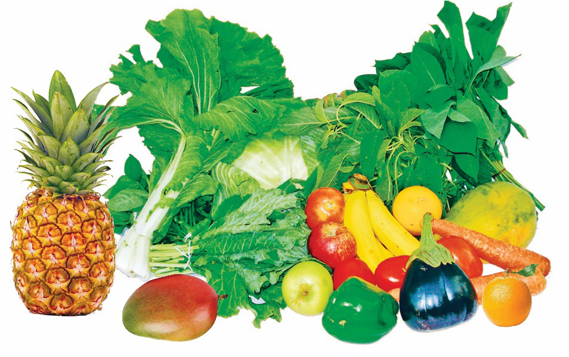

9
Student’s Book - Form Two

Biology for Secondary Schools
Vitamins are formed by the combination of glucose and some mineral elements.
Most of the vitamins are synthesised by autotrophs, particularly green plants.
Mammals can synthesise vitamins A and D using plant molecules obtained in their food. Examples of foods containing vitamins are fruits and vegetables, as shown in Figure 1.6.

Figure 1.6: Sources of vitamins
Functions of vitamins
Vitamins play an important role in the metabolic activities of both plants and animals, such as promoting functions of immune enzymes and nervous systems.
They are also important in the formation of bone tissue and red blood cells.
Deficiency or excess intake of vitamins can cause health problems. Table 1.1 shows examples of vitamins, their sources, functions, and deficiency symptoms.
Table 1.1: Sources, functions, and deficiency symptoms of vitamins
Vitamin
Sources
Functions
Deficiency symptoms
Vitamin A
(Retinol)
Liver, milk, eggs, oranges, and yellow vegetables such as carrots and pumpkins
Formation of membranes of the eyes, and the respiratory tract
(i) Night blindness
(ii) Increased risk of infections
Vitamin B1
(Thiamine)
Lean meat, liver, eggs, mushroom, brown rice, and whole grain cereals
(i) Assists in carbohydrate metabolism
(ii) Helps in muscle coordination
Beriberi, a disease characterised by a loss of appetite, muscle cramps, nerve disorder, and heart failure
Vitamin B2
(Riboflavin)
Liver, meat, mushroom, and whole grain cereals
Metabolism of all foods, and the release of energy to cells
(i) Cracks and sores around the mouth and nose
(ii) Visual problems


08/04/2026 10:18:10